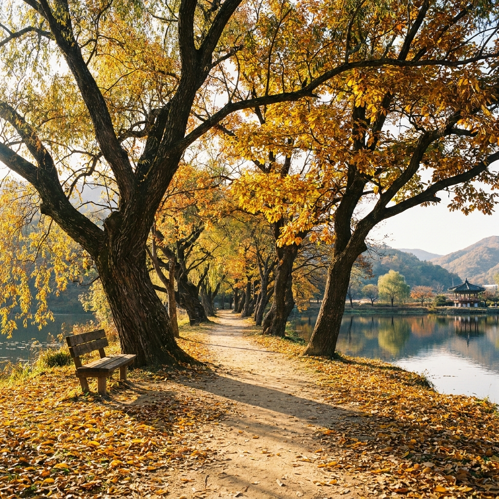

밀양 위양지 가을 둘레길 산책 코스와 완재정 반영 포토존 — 무료 주차장 요령과 표충사 단풍 드라이브 코스 비교
경남 밀양시 부북면에 자리한 위양지(位良池)는 10월 중순부터 11월 초순까지 고즈넉한 수변 고목들이 오색 단풍으로 물들며 가을 정취의 정점을 이룹니다.
저수지 한가운데 떠 있는 다섯 개의 인공 섬과 조선 숙종 때 건립된 정자 완재정(宛在亭)이 거울 같은 호수 수면에 비치는 반영은 전국 사진작가들이 손꼽는 최고의 가을 절경입니다.
전체 둘레 약 1.2km의 평탄한 흙길 둘레길은 남녀노소 누구나 40분 안팎으로 부담 없이 완주할 수 있으며 입장료와 주차료는 연중 완전 무료로 개방되어 있습니다.
위양지의 평온한 호수 산책을 마친 후 차량으로 약 35분 거리인 재약산 기슭의 천년고찰 표충사(表忠寺)로 이어지는 단풍 드라이브 코스를 연계하시면 완벽한 밀양 가을 당일치기 여행이 완성됩니다.
잔잔한 아침 수면에 비친 완재정 정자와 오색 가을 고목의 고즈넉한 반영 풍경 / AI 제작 이미지
01 | 밀양 위양지의 유래와 가을 정취가 특별한 이유
경상남도 밀양시 부북면 위양리에 위치한 위양지는 신라 시대에 농업용수를 공급하기 위해 축조된 유서 깊은 저수지입니다.
'양민을 위한다'는 뜻의 '위양(位良)'이라는 이름 그대로 오랜 세월 동안 인근 백성들의 비옥한 들판을 적셔주던 젖줄 역할을 해왔습니다.
봄철이면 저수지 둑방을 따라 하얗게 피어나는 이팝나무 꽃으로 전국적인 명성을 얻지만, 아는 이들 사이에서는 오색 단풍과 새벽 물안개가 어우러지는 10월 중하순 가을을 가장 아름다운 계절로 꼽습니다.
저수지 안에는 5개의 작은 인공 섬이 조성되어 있고, 수백 년 수령의 버드나무와 느티나무, 이팝나무 고목들이 저수지 둘레를 감싸 안고 있어 신비로운 수중 정원의 모습을 보여줍니다.
바람이 잠잠한 가을 오전 시간대에 방문하면 거울처럼 잔잔한 수면에 푸른 하늘과 붉은 단풍잎이 그대로 투영되어 황홀한 시각적 감동을 선사합니다.
02 | 완재정 정자의 역사와 거울 반영 포토존 명당 안내
위양지 풍경의 핵심이자 가장 상징적인 건축물은 저수지 중앙 섬에 자리 잡은 완재정(宛在亭)입니다.
완재정은 조선 숙종 26년(1700년) 안동 권씨 학삼공 권삼변 선생을 추모하기 위해 후손들이 건립한 정자로, 물 한가운데에 떠 있는 듯한 독특한 배치를 자랑합니다.
정자로 건너가는 좁은 돌다리와 흙길은 사방이 울창한 숲과 호수로 둘러싸여 있어 마치 시간 여행을 떠난 듯한 기분을 느끼게 합니다.
완재정 내부 마루에 앉아 정자 창살 프레임 너머로 호수를 바라보는 구도는 SNS에서 가장 인기 있는 인생 사진 명당입니다.
정자 맞은편 둘레길 둑방에서 망원 렌즈나 스마트폰 인물 사진 모드로 완재정 전체와 물에 비친 반영을 한 프레임에 담으면 그림엽서 같은 완벽한 가을 사진을 남길 수 있습니다.
03 | 위양지 둘레길 1.2km 코스 산책 동선과 소요시간
위양지 둘레길은 저수지 수변을 따라 둥글게 조성된 약 1.2km 길이의 평탄한 산책로입니다.
계단이나 가파른 언덕이 전혀 없는 마사토 흙길로 조성되어 있어 휠체어나 유모차를 동반한 가족 나들이객은 물론 거동이 불편한 어르신들도 편안하게 산책을 즐기실 수 있습니다.
일반적인 도보 속도로 걸으면 약 30분에서 40분 정도 소요되며, 중간중간 벤치에 앉아 쉬거나 사진을 찍으며 둘러보아도 1시간이면 충분히 완주가 가능합니다.
추천하는 관람 동선은 공영주차장 입구 → 완재정 진입 다리 → 둘레길 동쪽 데크 쉼터 → 북측 소나무 숲길 → 서측 둑방 전망대 → 원점 회귀 순서입니다.
둘레길 곳곳에 세월의 무게를 견뎌낸 고목들이 물속으로 가지를 길게 늘어뜨리고 있어 발걸음을 옮길 때마다 각도에 따라 전혀 다른 수변 풍경이 펼쳐집니다.

노랗게 물든 고목 터널과 잔잔한 호숫가를 따라 이어지는 위양지 흙길 산책로 / AI 제작 이미지
04 | 위양지 vs 표충사 가을 당일치기 코스 비교표
밀양을 대표하는 두 가을 명소인 수변 힐링형 '위양지'와 산악 사찰형 '표충사'의 특성을 상세히 비교해 드립니다.
두 명소는 차량으로 35분 거리에 위치하여 하루 일정으로 함께 묶어 여행하기에 최적의 조합입니다.
| 구분 |
밀양 위양지 (수변 둘레길) |
밀양 표충사 (산악 사찰 드라이브) |
| 위치 및 성격 |
밀양시 부북면 위양리 / 고즈넉한 인공 저수지 산책 |
밀양시 단장면 구천리 / 재약산 기슭 천년고찰 및 계곡 |
| 가을 핵심 풍경 |
완재정 거울 반영, 노란 고목 수변 단풍, 물안개 |
재약산 붉은 단풍 암벽, 사찰 기와지붕, 맑은 계곡물 |
| 코스 난이도 |
매우 쉬움 (1.2km 완전 평지 흙길, 40분 소요) |
보통 (경내 평지 산책 1시간 + 계곡 숲길 선택 가능) |
| 입장료 |
완전 무료 |
문화재구역 무료 입장 개방 |
| 주차료 |
무료 공영주차장 |
사찰 주차장 소형차 기준 2,000원 안팎 |
| 추천 방문 시간대 |
오전 08:00 ~ 10:30 (물안개 및 잔잔한 수면 반영) |
오후 13:30 ~ 15:30 (햇살이 계곡과 전각을 비추는 시간) |
| 주변 편의시설 |
인근 한옥 카페, 감성 디저트 전문점 |
산채비빔밥 및 도토리묵 토속 음식점 거리 |
오전에 위양지에서 잔잔한 아침 산책을 즐긴 후 표충사 입구 산채 음식거리에서 점심 식사를 하고, 오후에 표충사 경내와 재약산 단풍을 둘러보는 코스가 가장 만족도가 높습니다.
05 | 위양지 무료 주차장 이용 요령과 주말 혼잡 회피법
위양지 바로 앞에는 방문객을 위한 공영주차장이 마련되어 있으며 주차비는 무료입니다.
주차면수는 약 60여 대 규모로 평일에는 넉넉하게 이용할 수 있지만, 단풍이 절정에 달하는 10월 주말 낮 시간대(11:00~15:00)에는 만차가 자주 발생합니다.
주말에 방문하실 계획이라면 가급적 오전 10시 이전이나 오후 16시 이후에 도착하시는 것을 적극 권장합니다.
만약 메인 주차장이 만차일 경우, 진입 도로 갓길은 왕복 2차선으로 좁아 불법 주차 시 통행이 마비될 수 있으므로 안내 요원의 지시에 따라 인근 임시 주차 구역을 이용하셔야 합니다.
전기차 충전 구역과 장애인 전용 주차면도 갖추어져 있으므로 해당 차주분들은 편리하게 진입하실 수 있습니다.
06 | 재약산 표충사 연계 단풍 드라이브 코스 상세 안내
위양지에서 나와 지방도를 따라 약 30km(약 35분 소요)를 달리면 영남알프스의 명산 재약산 자락에 안긴 표충사에 닿게 됩니다.
표충사로 향하는 단장천 계곡 도로는 가을철 붉은 단풍나무와 노란 은행나무가 가로수를 이루어 경남 최고의 드라이브 명소로 꼽힙니다.
표충사는 임진왜란 당시 승병을 이끌어 나라를 구한 사명대사의 호국 정신이 깃든 유서 깊은 사찰로, 유교식 사당과 불교식 사찰이 공존하는 특별한 역사를 지니고 있습니다.
거대한 바위 암봉을 자랑하는 재약산의 웅장한 가을 능선이 병풍처럼 사찰 뒤편을 감싸고 있어 웅장함과 평온함을 동시에 느낄 수 있습니다.
경내 대웅전과 삼층석탑 주변을 거닐며 들려오는 은은한 풍경 소리와 단풍 낙엽 밟는 소리는 도시에서 지친 마음을 씻어내기에 충분합니다.
재약산의 웅장한 가을 능선 아래 오색 단풍으로 물든 천년고찰 표충사 전경 / AI 제작 이미지
07 | 위양지 인근 감성 한옥 카페와 밀양 로컬 미식
위양지 둘레길 산책 후에는 저수지 바로 인근에 자리한 감성 카페거리에서 여유로운 티타임을 즐겨보시길 권합니다.
위양리 일대에는 오래된 한옥을 감각적으로 리모델링한 한옥 카페와 통유리창 너머로 위양지 숲을 조망할 수 있는 베이커리 카페들이 모여 있습니다.
밀양의 특산물인 대추를 진하게 달여낸 대추차와 대추 카스텔라, 쌀 디저트는 가을 쌀쌀한 바람을 맞은 후 몸을 따뜻하게 데워주는 별미입니다.
든든한 식사를 원하신다면 표충사 방면 단장면 일대의 토종닭 백숙과 자연산 산채비빔밥을 추천해 드립니다.
또한 밀양 시내 방면으로 이동하실 경우 밀양 돼지국밥 골목이나 영남루 인근의 민물장어 구이도 오랜 역사를 자랑하는 지역 대표 먹거리입니다.
08 | 위양지 가을 방문 시 필수 체크리스트
성공적이고 여유로운 위양지 가을 여행을 위해 출발 전 반드시 챙겨야 할 핵심 사항을 정리했습니다.
🍂 위양지 & 표충사 가을 나들이 핵심 체크리스트
1. 완재정 반영 촬영 골든타임: 바람이 가장 잦아들고 햇살이 정면으로 비치는 오전 9시~10시 30분 사이에 도착할 것
2. 카메라 렌즈 준비: 완재정 전경을 담을 광각 렌즈와 섬 너머 정자를 당겨 찍을 표준~망원 화각 준비
3. 복장 및 신발: 둘레길은 평탄하지만 흙길이므로 흙먼지가 묻어도 편안한 운동화와 아침 기온차 대비 바람막이 필수
4. 반려동물 동반 수칙: 위양지 둘레길은 목줄 착용 및 배변봉투 지참 시 반려견 동반 산책 가능
5. 쓰레기 되가져가기: 깨끗한 자연환경 보존을 위해 취사 및 야영 절대 금지, 개인 쓰레기는 반드시 회수
09 | 당일치기 추천 여행 일정표와 이동 동선 요약
시간을 알차게 활용하여 밀양의 가을 명소를 모두 둘러볼 수 있는 최적의 당일치기 일정표입니다.
오전 09:30 밀양 위양지 도착 및 무료 주차 → 오전 09:40~10:40 완재정 반영 사진 촬영 및 호수 둘레길 산책 → 오전 10:40~11:30 인근 한옥 카페에서 여유로운 차 한잔 → 오전 11:30~12:10 재약산 방면 단풍길 드라이브 이동 → 오후 12:10~13:20 표충사 음식거리에서 산채비빔밥과 도토리묵 점심 식사 → 오후 13:20~15:00 표충사 경내 관람 및 계곡 단풍 숲길 산책 → 오후 15:30 귀가 또는 밀양 시내 영남루 야경 투어로 이어지는 코스입니다.
자연의 잔잔한 고요함과 웅장한 가을 산사가 어우러진 밀양에서 잊지 못할 가을 추억을 만들어보시기 바랍니다.
#밀양위양지
#위양지단풍
#완재정반영
#밀양가을여행
#표충사단풍
#밀양가볼만한곳
#경남단풍명소
#위양지둘레길
#밀양드라이브코스
#가을인생샷명소